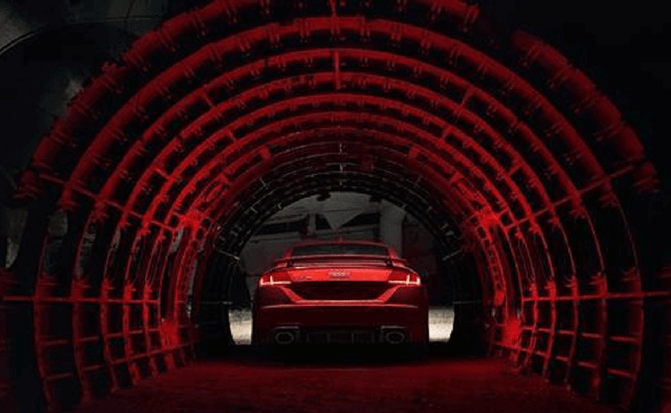

奥迪OLED灯光科技

此次“燃擎”上市的新款奥迪TT RS是奥迪首款搭载OLED尾灯技术的量产车型。一直以来，作为汽车灯光科技领域的领军品牌，奥迪始终对OLED灯光科技进行全方位的系统性研发，实现了科技与设计的完美结合。
奥迪的OLED大灯最早出现在2013年的国际消费电子展（CES）上。那时，奥迪的工程师们就向大家展示了这项最新的照明技术。2015年亚洲首届CES电子展上，奥迪再一次展出了OLED系统，奥迪的工程师们利用OLED技术开发出了这个随车辆运行状况调整车尾灯显示的技术。2015年7月，奥迪矩阵式OLED技术的概念车首次亮相法兰克福车展。
OLED全称为有机发光二极管（organic light emitting diode），每个OLED单元含有两个电极，并且其中至少有一个